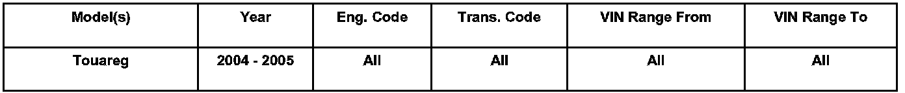
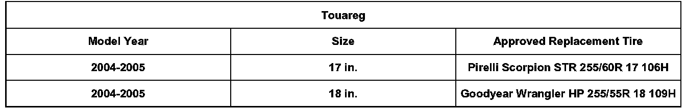

Tires - Poor Tread life Wear
44 06 08August 15, 2006
2010499
44 06 08 Aug. 15, 2006 2010499 Supersedes TB Group 44 number 06-04 dated August 7, 2006 due to updated Pirelli replacement tire description information.
Condition
Replacement Tires

Vehicles Affected
Technical Background
Dissatisfaction with length of tread life / wear rate of OE tire application.
Production Solution
No production change required.
Service

The table contains information regarding two new factory approved replacement tires for Touareg vehicles which have an increased tread wear rating.
Warranty
Information Only.
Always refer to Policies and Procedures Manual
Required Parts and Tools
No Special Tools required.
No Special Parts required. Always see ETKA for the latest part(s) information.